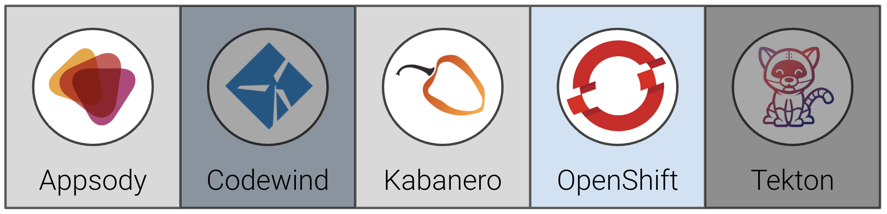
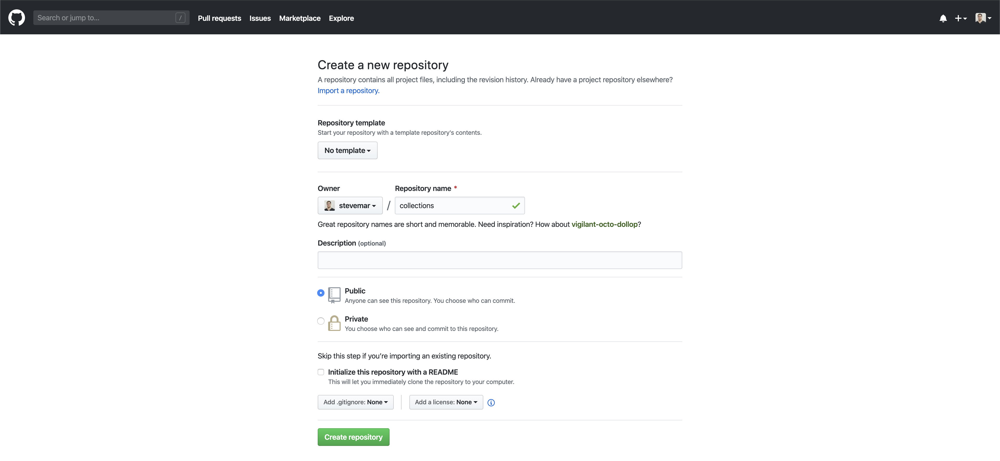
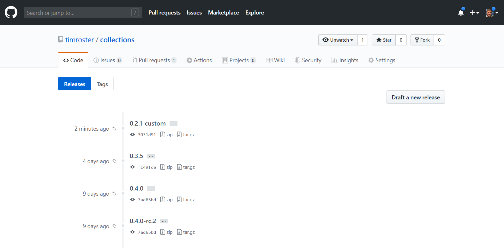
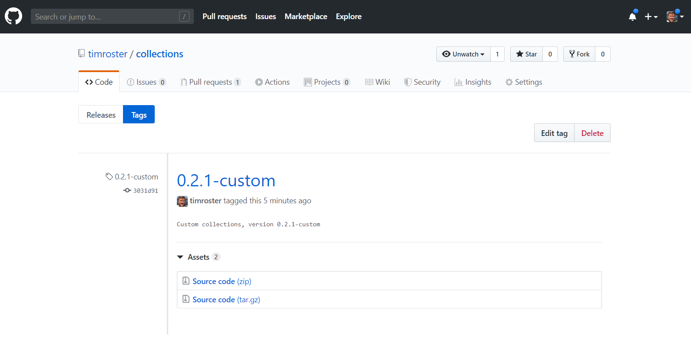
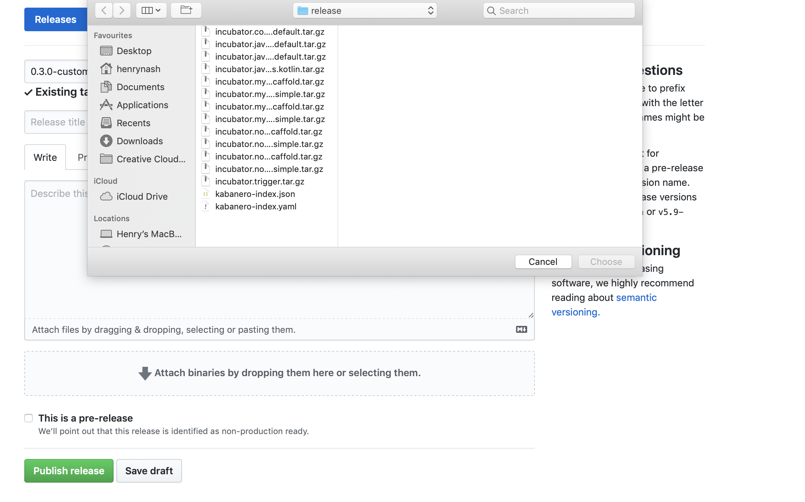
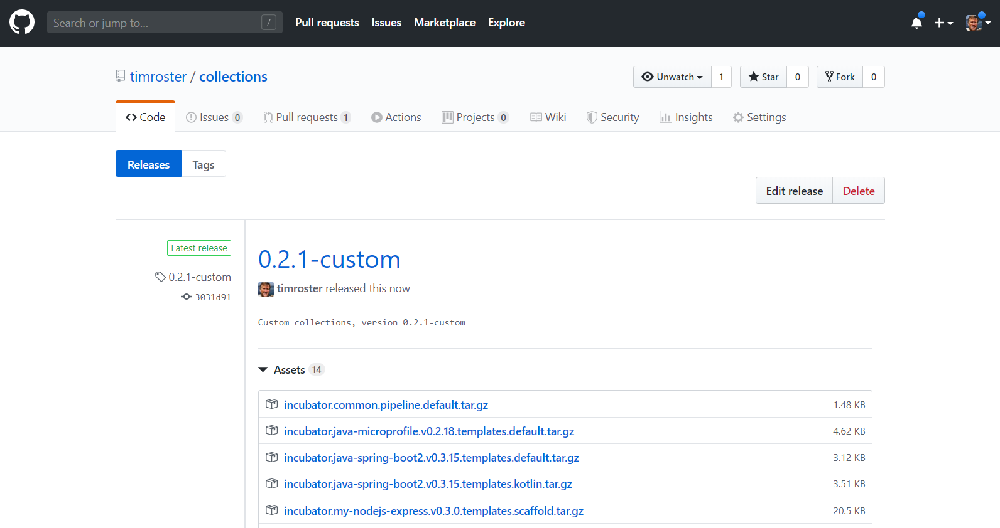

Exercise 6: Building a custom Appsody Stack Collection in Kabanero¶
In this exercise, we will show how to create a custom Collection, that includes the custom Appsody Stack from the previous exercise.
When you have completed this exercise, you will understand how to
- clone and host your own Collection
- modify the Collection to include a custom Appsody Stack

Prerequisites¶
You should have already carried out the prerequisites defined in Exercise 5. In addition, you need to ensure you have the following installed on your local machine:
- yq
- python3
- pyYAML
On macOS, you can install the above with:
brew install yq
brew install python
pip install pyYAML
NOTE: do not install the python yq package, it has a different syntax than the yq application and will cause the build scripts to fail.
About custom Kabanero Repositories¶
By default the Kabanero open source project is configured to automatically use the latest release at https://github.com/kabanero-io/collections.
The default collections can be modified to meet an organization's unique needs.
-
Collections are categorized as either
stable,incubatororexperimentaldepending on the content of the collection. -
stable: collections that meet a set of technical requirements. incubator: collections that are actively being worked on to satisfy the stable criteria.-
experimental: collections that are used for trying out specific capabilities or proof of concept work. -
Collections include an Appsody stack, and a Tekton pipeline.
Steps¶
- Create a new repo to host your custom collection
- Create a new image namespace to host images on OpenShift
- Set up a local build environment
- Add our custom stack to the new collection
- Build the new collection
- Push collection images
- Update code repo and release a new collection
1. Create a new repo to host your custom collection¶
Go to https://github.com/new and create a new repository, collections. Do not initiatize the repos with a license file or README.

Clone the default collections repository and create a new copy of it in your GitHub organization, replacing <username> with your own.
cd ~/appsody-apps/
git clone https://github.com/kabanero-io/collections
cd collections
git checkout tags/0.2.1 -b 0.2.1-custom
git remote add my-org https://github.com/<username>/collections.git
git push -u my-org
About the Kabanero Repo structure¶
ci
├── [ files used for CI/CD of the Collections ]
experimental (or incubator, or stable)
├── common/
| ├── pipelines/
| | ├── common-pipeline-1/
| | | └── [pipeline files that make up a full tekton pipeline used with all collections in experimental category]
| | └── common-pipeline-n/
| | └── [pipeline files that make up a full tekton pipeline used with all collections in experimental category]
├── collection-1/
| ├── [collection files - see collection structure below]
└── collection-n/
└── [collection files - see collection structure below]
2. Create a new image namespace to host images on OpenShift¶
To actually use the stacks we need images, images will be hosted on openshift
oc new-project kabanero-noauth
oc policy add-role-to-group registry-viewer system:unauthenticated -n kabanero-noauth
NOTE: You may seem a warning about this step, but it should still have worked, e.g.
oc new-project kabanero-noauth
oc policy add-role-to-group registry-viewer system:unauthenticated -n kabanero-noauth
Warning: Group 'system:unauthenticated' not found
role "registry-viewer" added: "system:unauthenticated"
3. Set up a local build environment¶
There are several environment variables that need to be set up. These are required in order to correctly build the collections.
NOTE: When setting the
TRAVIS_REPO_SLUGvariable, make sure you substitute the actual github repo you created above in place of<username>.
export IMAGE_REGISTRY_ORG=kabanero-noauth
export IMAGE_REGISTRY_PUBLISH=true
export IMAGE_REGISTRY_USERNAME=$(oc whoami)
export IMAGE_REGISTRY_PASSWORD=$(oc whoami -t)
export TRAVIS_REPO_SLUG=<username>/collections
export TRAVIS_TAG=0.2.1-custom
In addition to the above, the IMAGE_REGISTRY environment variable should still be set from Exercise 3, which you can check with:
echo $IMAGE_REGISTRY
$ echo $IMAGE_REGISTRY
IMAGE_REGISTRY=docker-registry-default.henrycluster6-5290c8c8e5797924dc1ad5d1b85b37c0-0001.eu-gb.containers.appdomain.cloud
If IMAGE_REGISTRY is not set, then you need to set it up again, as described in Exercise 3 - Access the internal docker registry
4. Add our custom stack to the new collection¶
Now we take our custom stack from exercise 5 (recall that is was named my-nodejs-express and includes the helmet library) and copy it over to the incubator folder of our collection repo. From the collections repo, perform the following steps:
List the collections before the copy:
ls incubator
common java-spring-boot2 nodejs-express
java-microprofile nodejs nodejs-loopback
Now copy in our new custom stack:
cp -R ~/appsody-apps/my-nodejs-express incubator
Check that we now have this in the list of collections:
ls incubator
common java-spring-boot2 nodejs nodejs-loopback
java-microprofile my-nodejs-express nodejs-express triggers
Create a new file called collection.yaml in collections/incubator/my-nodejs-express, add the following:
default-image: my-nodejs-express
default-pipeline: default
images:
- id: my-nodejs-express
image: $IMAGE_REGISTRY_ORG/my-nodejs-express:0.3
Edit the new file called stack.yaml in collections/incubator/my-nodejs-express. Update the name and description fields to add "with Helmet" and also replace the maintainer information with your information if desired (you will probably see a different version, don't change that and keep as-is):
name: Node.js Express with Helmet
version: 0.3.0
description: Express web framework for Node.js with Helmet
license: Apache-2.0
language: nodejs
maintainers:
- name: Your Name
email: your email
github-id: yourgithubid
default-template: simple
And also create a directory called pipelines in collections/incubator/my-nodejs-express, and add a single empty file called .gitkeep.
5. Build the new collection¶
This step builds the kabanero-index.yaml file.
From the collections directory, run the build script. For example:
cd ~/appsody-apps/collections
IMAGE_REGISTRY_ORG=$IMAGE_REGISTRY/$IMAGE_REGISTRY_ORG ./ci/build.sh
NOTE: This process can take several minutes to complete.
Note that this will build all the collections in the incubator directory, including the new my-nodejs-express stack.
Following the build, you can find the generated collection assets in the collections/ci/assets/ directory and all the docker images in your local docker registry.
You should see output like the following, take note of the my-nodejs-express stack being built, and ensure there are no errors in the output:
...
Listing all stacks
Building stacks: incubator/java-microprofile incubator/java-spring-boot2 incubator/my-nodejs-express incubator/nodejs-express incubator/nodejs-loopback incubator/nodejs
...
- BUILDING stack: incubator/my-nodejs-express
File containing output from image build: /Users/stevemar/appsody-apps/collections/ci/build/image.my-nodejs-express.0.2.8.log
created kabanero/my-nodejs-express:0.2.8
--- Created template archive: incubator.my-nodejs-express.v0.2.8.templates.scaffold.tar.gz
--- Created template archive: incubator.my-nodejs-express.v0.2.8.templates.simple.tar.gz
...
=== Testing my-nodejs-express : scaffold
~/appsody-apps/collections/ci/build/test/kabanero-index-local/my-nodejs-express/scaffold ~/appsody-apps/collections
> appsody init kabanero-index-local/my-nodejs-express scaffold
> appsody run -P --name my-nodejs-express-scaffold
...
> appsody stop --name my-nodejs-express-scaffold
Stopping development environment
Running command: docker stop my-nodejs-express-scaffold
...
> appsody build
error=0
~/appsody-apps/collections
6. Push collection images¶
To push the collection images, there is a release script that will do the actual pushing to the image registry. The current scripts have a minor issue with private registry login and tagging so first log in to the private registry, and then run the release script. The two commands below will achieve this:
echo $IMAGE_REGISTRY_PASSWORD | docker login -u $IMAGE_REGISTRY_USERNAME --password-stdin $IMAGE_REGISTRY
IMAGE_REGISTRY="" IMAGE_REGISTRY_PASSWORD="" ./ci/release.sh
You should see output like the following, take note of the my-nodejs-express stack being pushed to the registry, and ensure there are no errors in the output:
$ IMAGE_REGISTRY="" IMAGE_REGISTRY_PASSWORD="" ./ci/release.sh
== Running pre_env.d scripts
== Done pre_env.d scripts
== Running post_env.d scripts
== Done post_env.d scripts
...
Releasing: /Users/stevemar/appsody-apps/collections/ci/assets/incubator.my-nodejs-express.v0.2.8.templates.scaffold.tar.gz
Releasing: /Users/stevemar/appsody-apps/collections/ci/assets/incubator.my-nodejs-express.v0.2.8.templates.simple.tar.gz
...
Pushing docker-registry-default.cp4apps-workshop-prop-5290c8c8e5797924dc1ad5d1b85b37c0-0001.us-east.containers.appdomain.cloud/kabanero-noauth/my-nodejs-express
The push refers to repository [docker-registry-default.cp4apps-workshop-prop-5290c8c8e5797924dc1ad5d1b85b37c0-0001.us-east.containers.appdomain.cloud/kabanero-noauth/my-nodejs-express]
535ab22146d1: Layer already exists
0: digest: sha256:535ab22146d1 size: 3883
535ab22146d1: Layer already exists
0.2: digest: sha256:535ab22146d1 size: 3883
535ab22146d1: Layer already exists
0.2.8: digest: sha256:535ab22146d1 size: 3883
535ab22146d1: Layer already exists
latest: digest: sha256:535ab22146d1 size: 3883
Tagging docker-registry-default.cp4apps-workshop-prop-5290c8c8e5797924dc1ad5d1b85b37c0-0001.us-east.containers.appdomain.cloud/kabanero-noauth/my-nodejs-express:0.2.8
> docker tag kabanero-noauth/my-nodejs-express:0.2.8 docker-registry-default.cp4apps-workshop-prop-5290c8c8e5797924dc1ad5d1b85b37c0-0001.us-east.containers.appdomain.cloud/kabanero-noauth/my-nodejs-express:0.2.8
...
NOTE: Since this above is pushing a lot of images, it is possible that you might see this command fail with a timeout error, or unknown blob. Retrying the command (more than once if necessary) will resolve this issue.
7. Update code repo and release a new collection¶
Once you have made all the changes to the collection and you are ready to push the changes back to your git repository then
# Add your custom stack changes
git add -A
# Create a commit message
git commit -m "Updates to the collections"
# Push the changes to your repository. For example:
git push -u my-org
To create a full release of the collections, create a git tag:
git tag 0.2.1-custom -m "Custom collections, version 0.2.1-custom"
git push --tags
Navigating back to your GitHub repo, you should see a new release available:

Clicking on the release name (0.2.1-custom) will allow you to edit the release.

Click on Edit tag. and then upload all the files in collections/ci/release/ which were generated from the previous steps, by clicking on the Attach binaries... box.

Once you have uploaded the files you can publish your new collection by clicking Publish release, at the bottom of the page

You will note that the collection includes the kabanero-index.yaml file we edited earlier. The url to this index file is is what you will provide appsody as a link to your new custom repository (that is contained within the new collection. You normally obtain and copy the url (depending on your browser) by right (or secondary) clicking over the kabanero-index.yaml item in the list of files shown in the release. It should be of the form:
https://github.com/<username>/collections/releases/download/0.2.1-custom/kabanero-index.yaml
You will need this url for the next exercise, where we will create an appsody application based on your new collection.
Congratulations!! We've just created our own custom collection that included our own custom stack. Now we need to test our released collection using Appsody. On to the next exercise.